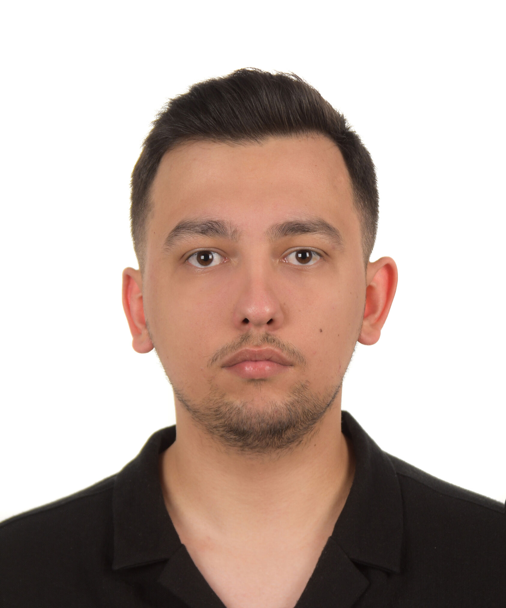

software engineer / mobile & backend
Java · Kotlin · Spring Boot · React Native
A recent graduate software engineer building mobile and backend systems, focused on scalable software architecture. Developed web and mobile applications for Erasmus+ funded European Union projects.

Emir Karatekinsoftware engineer
// about
Currently studying Computer Science, Mobile Application Design at Vizja University. Built academic and personal projects with Java, Kotlin, Spring Boot, React Native, SQL and Git.
Passionate about building scalable applications, learning current technologies, and continuously improving my software development skills. Looking for a Junior Software Engineer role where I can contribute and keep growing.
// experience
MOBAD (Mobile Adventure Sp. z o.o.), Warsaw, Poland
Polisan Boya Holding, Turkey
// skills
// projects
Employee management system rebuilt from a Java Swing desktop app into a Spring Boot REST API with a React dashboard — JWT auth, bcrypt password hashing, role-scoped access.
A random prize-draw tool rebuilt from a Java Swing app that could freeze on small entry lists. The new version validates the winner count server-side and reveals winners one at a time with a confetti animation.
A three-role hospital appointment system (chief physician, doctor, patient), rebuilt from a Java Swing app that stored passwords in plain text and built SQL with string concatenation. Now: bcrypt, JPA parameter binding, and role-based access control on every endpoint.
A vehicle service-tracking platform for a motorcycle workshop, built as one codebase with two experiences: a JWT-protected admin dashboard where staff log categorized maintenance — parts, inspections, photos — and a login-free customer portal where owners look up full service history by license plate, request appointments and browse vehicles for sale.
An AI-driven health and fitness ecosystem: a generative-AI diet and workout planner tuned to your biometrics and goals, plus a computer-vision food scanner that turns a camera photo into calories, macros and a 1–10 health score — with a BMI/BMR/TDEE dashboard, hydration tracking, a 175+ item grocery catalog, and full EN/TR/PL localization.
// eu-funded projects & personal work
Cybersecurity training platform for sports coaches. Web and mobile app with training modules, assessment tools and simulated exercises.
view project →Mobile app with personalized learning modules, knowledge assessments and progress tracking for sports coaches. Awarded by the European Commission.
view project →Scenario-based, multilingual e-learning platform on digital safety for immigrant and refugee parents. Awarded by the European Commission.
view project →// contact
Feel free to reach out for Junior Software Engineer roles or collaborations.